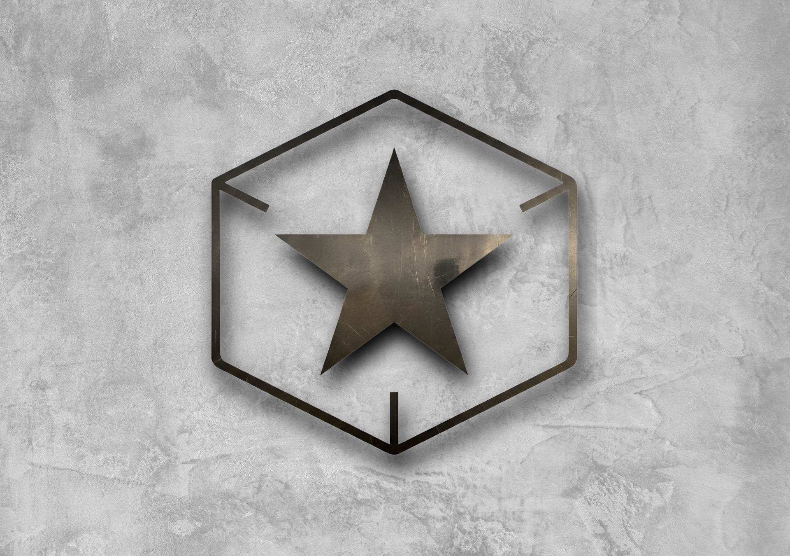

Política de Privacidade — Guerrilha APP
Aplicativo oficial dos controladores Guerrilha Pedais · Última atualização: 9 de novembro de 2026
Resumo
O aplicativo Guerrilha APP serve para configurar os controladores MIDI da Guerrilha Pedais pelo Bluetooth. Ele não coleta, não armazena em servidores e não compartilha dados pessoais. Não tem cadastro, login, anúncios nem ferramentas de análise ou rastreamento.
Bluetooth
O app usa o Bluetooth do aparelho só para encontrar e se comunicar com o seu controlador Guerrilha Pedais: ler e gravar bancos, presets, nomes, cores e demais configurações do pedal.
No Android 12 ou mais novo é pedida a permissão “Dispositivos por perto”. Ela é declarada de forma que não é usada para saber a sua localização.
Localização (só Android 11 ou anterior)
No Android 6 a 11, o próprio sistema exige a permissão de Localização (e a Localização ligada) para que um app consiga procurar aparelhos Bluetooth. Nessas versões o Guerrilha APP pede essa permissão apenas para encontrar o controlador.
O app não lê, não guarda e não envia a sua localização. Do Android 12 em diante essa permissão nem é pedida.
Dados que ficam no aparelho
- As configurações do controlador são lidas do pedal e enviadas de volta para ele pelo Bluetooth.
- Preferências do app (ex.: último aparelho usado, opções da tela) ficam guardadas só no seu celular.
- Quando você exporta um backup, o arquivo é salvo ou compartilhado por você, no destino que você escolher.
Nada disso é enviado para a Guerrilha Pedais nem para terceiros.
Internet
O app não depende de internet para funcionar e não envia dados para servidores. A permissão de Internet faz parte da estrutura padrão do aplicativo. Se em alguma versão futura o app passar a usar a internet (por exemplo, para buscar atualizações), esta política será atualizada antes.
Crianças
O app é uma ferramenta de configuração de equipamento musical, não é direcionado a crianças e não coleta dados de nenhum usuário, de qualquer idade.
Seus direitos (LGPD)
Como o app não coleta dados pessoais, não há dados seus guardados pela Guerrilha Pedais por meio dele. Para apagar tudo o que o app guardou no seu aparelho, basta desinstalá-lo ou limpar os dados do app nas configurações do sistema.
Alterações e contato
Se esta política mudar, a nova versão será publicada nesta mesma página, com a data atualizada no topo.
Dúvidas: CONTATO@EXEMPLO.COM